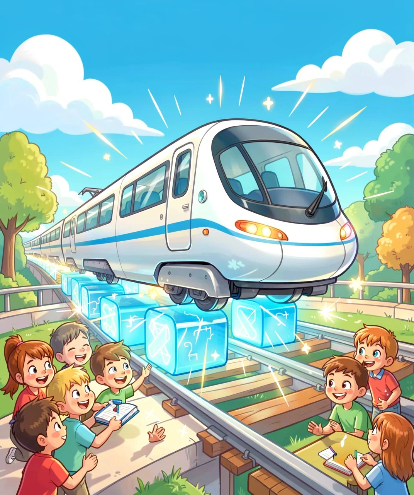
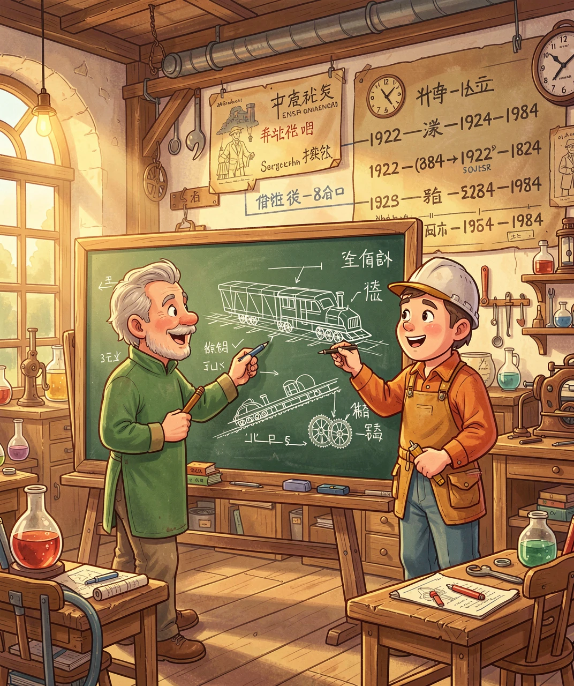
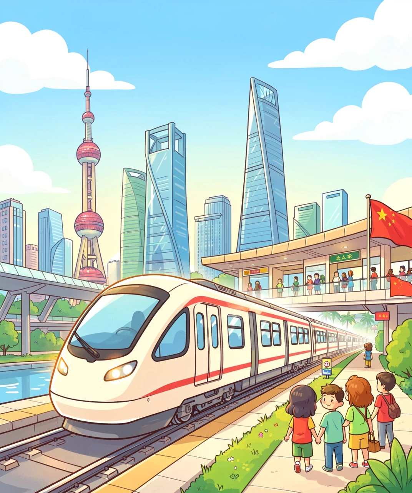
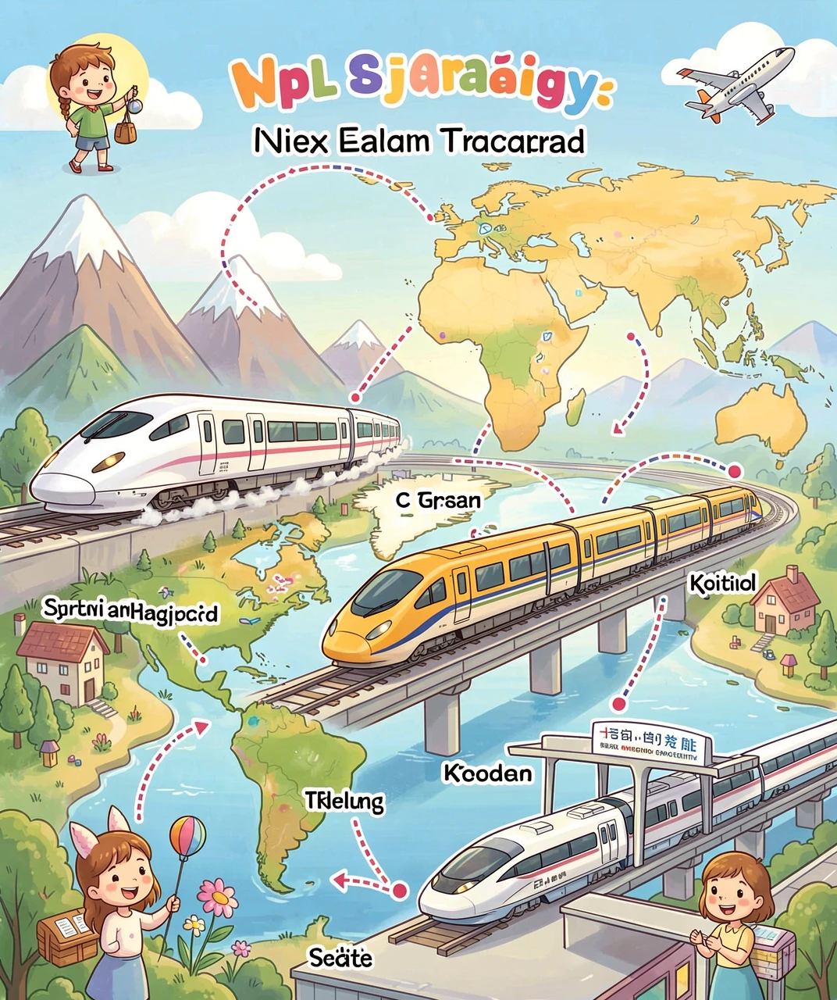
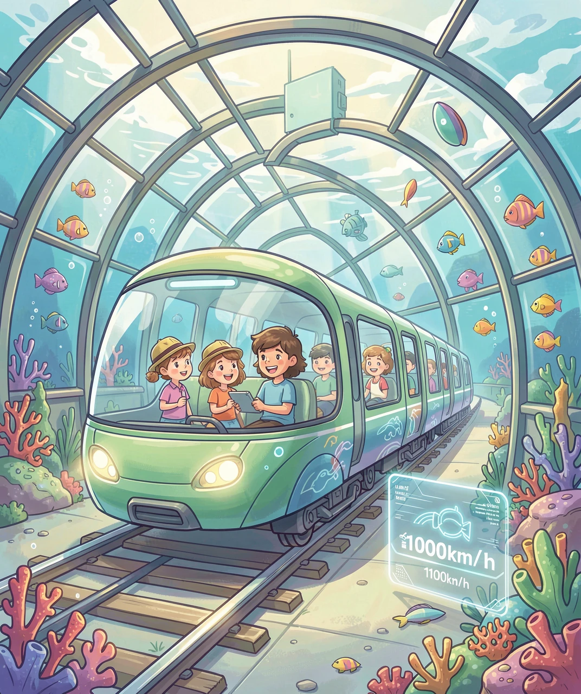

没有轮子的火车，是怎么跑得比飞机还快的？
你坐过火车吗？普通火车"哐当哐当"地跑在铁轨上，轮子和铁轨之间不停地摩擦、碰撞。可是，有一种火车，它根本不碰铁轨！它像一块神奇的飞毯一样，悬浮在轨道上方，安静地"飞"过去——这就是磁悬浮列车！
磁悬浮列车的名字来自三个字："磁"代表磁铁，"悬浮"就是飘在空中的意思。所以，磁悬浮列车就是用磁铁的力量飘起来的火车！它没有轮子，不碰轨道，跑起来又快又安静。目前世界上最快的磁悬浮列车速度可以达到每小时603公里，比很多飞机起飞时的速度还要快呢！

你可能想问：没有轮子，它是怎么"站住"的？怎么拐弯的？怎么刹车的？别着急，我们一步一步来揭开这个秘密。先从它的历史说起——这个让火车飞起来的想法，其实已经有100多年了！
磁悬浮的故事要从1922年说起。那一年，德国工程师赫尔曼·肯佩尔（Hermann Kemper）第一次提出了一个大胆的想法："如果火车不用轮子，而是用磁力飘在轨道上，那该多好啊！" 当时很多人觉得他是在做白日梦——火车没轮子怎么行？
但肯佩尔没有放弃。1934年，他获得了世界上第一个磁悬浮列车技术的专利！虽然当时的技术还造不出真正的磁悬浮列车，但他的想法就像一颗种子，种在了科学家们的心里。
到了1960年代，德国和日本开始认真研究磁悬浮技术。德国走的是常导磁悬浮路线（用电磁铁吸引列车悬浮），日本则选择了超导磁悬浮路线（用超低温超导材料产生超强磁场让列车悬浮）。两个国家就像在比赛一样，各自拼命发展自己的技术。
1971年，德国造出了第一辆实验磁悬浮列车，虽然只能坐几个人，速度也不快，但证明了磁悬浮真的可行！1984年，英国在伯明翰机场建成了世界上第一条商用磁悬浮线路，虽然只有600米长，但这是人类第一次正式坐上磁悬浮列车出行！

说到磁悬浮，中国可是世界上最有发言权的国家之一！2002年12月31日，上海磁浮示范运营线正式开通，这是全世界第一条高速磁悬浮商业运营线！从上海浦东龙阳路站到浦东国际机场，全长30公里，最高时速430公里，8分钟就到了！坐在车里，看着窗外飞速掠过的景色，感觉就像在飞一样。
上海磁浮采用的是德国的Transrapid（运捷）技术，属于常导电磁悬浮。列车和轨道之间只有8到10毫米的间隙——比一根筷子还细！但它能稳稳地悬浮着，即使坐满乘客也完全不会掉下来。

但中国的磁悬浮梦远不止这一条线。2021年7月，中国自主研发的时速600公里高速磁浮交通系统在青岛成功下线！这辆磁浮列车由中国中车研发，从外观到核心技术全部国产，标志着中国从"引进技术"走向了"自主创新"。
2022年，中国又有了新的突破——高温超导磁浮！西南交通大学研发的高温超导磁悬浮试验车，利用液氮冷却（零下196度，比日本用的零下269度"温暖"得多）让超导体工作。这种技术的最大优势是自带稳定悬浮——即使断电，列车也不会掉下来，因为它靠的是超导体的"钉扎效应"，就像被无数只无形的手托住一样安全！
目前，中国正在规划多条高速磁浮线路，包括成渝磁浮（成都到重庆）、广深磁浮（广州到深圳）等。未来的中国城市之间，可能坐磁悬浮只需要现在高铁一半的时间！
磁悬浮不是中国一个国家的"独角戏"，全世界都在竞相发展这项技术。让我们看看各国都在做什么：
🇯🇵 日本：超导磁浮之王
日本是超导磁浮技术最领先的国家。2015年4月，日本的SCMaglev（超导磁浮）在山梨实验线上创下了时速603公里的世界纪录！日本正在建设中央新干线，连接东京和名古屋，全程286公里，磁浮列车只需40分钟（新干线要1小时40分）。预计2027年开通东京到名古屋段，2045年延伸到大阪。这将是世界上最快的商业铁路！
🇩🇪 德国：磁浮技术的先驱
德国虽然发明了Transrapid技术，但本国却从未建成商业高速磁浮线。2001年规划的慕尼黑机场磁浮线因成本问题在2008年取消。不过德国技术"墙内开花墙外香"——上海磁浮就是用的德国技术。目前德国也在研究新一代磁浮方案。
🇰🇷 韩国：后来居上
韩国在2014年开通了仁川机场磁浮线，采用自主研发的常导技术，全长6.1公里，是城市中低速磁浮。韩国还在开发速度更快的高速磁浮系统。

🇺🇸 美国：梦想与犹豫
美国多次讨论过建设磁浮线路，比如连接华盛顿和巴尔的摩的东北磁浮线，但项目进展缓慢，主要卡在资金和政治分歧上。不过2024年，美国联邦铁路管理局批准了巴尔的摩-华盛顿磁浮项目进入环境评估阶段，让这个梦想又近了一步。
世界趋势总结：全球磁悬浮正从中低速城市线向高速城际线升级，从单一技术路线向多元化技术发展，从实验阶段走向大规模商用。
磁悬浮的未来有多酷？科学家们正在研究一个更疯狂的想法——真空管道磁悬浮！
普通磁悬浮列车跑得快，但有一个"敌人"：空气阻力。就像你骑自行车时，风会挡在你前面，速度越快，风的阻力越大。科学家想：如果把管道里的空气抽走，变成真空，列车在管道里跑不就没有空气阻力了吗？
这个想法如果实现，磁悬浮列车的速度可能达到每小时1000公里甚至更高！从北京到上海只需要1个多小时，比坐飞机还快！

中国已经开始了这方面的研究。西南交通大学建成了世界首个真空管道磁浮交通实验系统，在真空管道里测试高温超导磁浮列车。虽然目前还只是小规模实验，但这代表了这个领域的最前沿方向。
除了真空管道，未来的磁悬浮还可能和人工智能结合：列车完全自动驾驶，AI实时调整速度和悬浮高度；车厢内配备全息屏幕和VR娱乐，让你在高速旅行中也不会无聊；太阳能和再生制动技术让列车几乎零排放，真正成为绿色交通工具。
也许等到你长大的那时候，出门旅行坐磁悬浮就像现在坐地铁一样平常。而推动这一切的，就是那块神奇的小东西——磁铁！🧲
（答案：1-B, 2-C, 3-C, 4-D, 5-B）